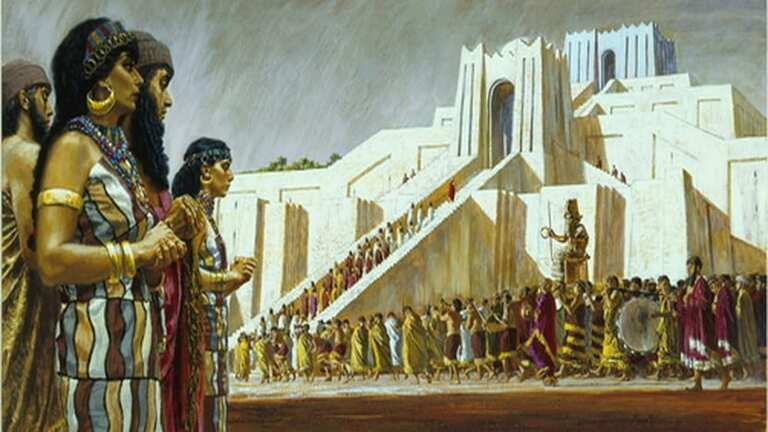
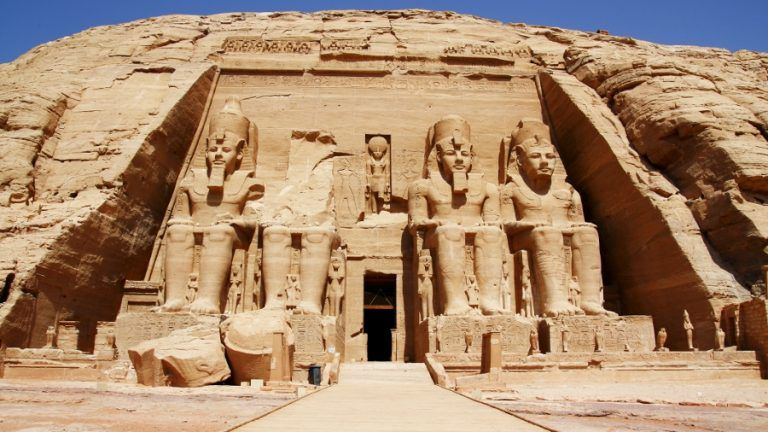
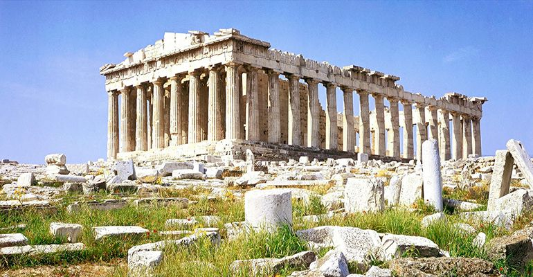
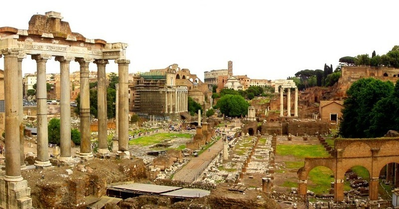

Los sumerios de la antigua Mesopotamia tienen algunas de las primeras evidencias conocidas de notación musical. Utilizaban tablillas de arcilla para registrar composiciones musicales y poemas. Los instrumentos incluían la lira y la flauta de caña.
La música era una parte importante de la vida egipcia. Utilizaban una variedad de instrumentos, como la lira, la flauta y el arpa. La música también desempeñaba un papel en ceremonias religiosas y funerarias.
La música desempeñaba un papel fundamental en la cultura griega antigua. Los griegos desarrollaron un sistema musical basado en escalas y modos. Personajes como Pitágoras contribuyeron a la teoría musical. La música se usaba en el teatro, la religión y las celebraciones públicas.
La música romana heredó muchas influencias de la cultura griega. Los romanos utilizaron instrumentos como la lira y la flauta en sus festivales y eventos sociales. También desarrollaron una forma temprana de notación musical.
La música clásica del siglo XX y XXI ha visto una amplia gama de enfoques, desde el impresionismo de compositores como Debussy y Ravel hasta el expresionismo de compositores como Schoenberg y Stravinsky. Se ha experimentado con nuevas formas y técnicas, como la música aleatoria y la música electrónica, y se han utilizado instrumentos no convencionales en la composición.
El jazz ha evolucionado continuamente y ha dado lugar a subgéneros como el bebop, el cool jazz, el jazz fusión y el jazz contemporáneo. Músicos como Miles Davis, John Coltrane y Herbie Hancock han influido en el desarrollo del jazz moderno.
La música pop y rock contemporánea ha experimentado cambios significativos a lo largo del tiempo. Desde el rock 'n' roll de los años 50 hasta el rock psicodélico de los años 60, el punk de los años 70, el new wave de los años 80 y el rock alternativo de los años 90, ha habido una constante evolución en el sonido y la estética.
El surgimiento de la música electrónica en el siglo XXI ha dado lugar a una amplia variedad de géneros, incluyendo techno, house, trance, drum and bass, dubstep y más. Los DJs y productores electrónicos han desempeñado un papel importante en la creación de nuevos sonidos y ritmos.
El hip-hop se ha convertido en un género musical dominante en la música contemporánea. Ha evolucionado desde sus raíces en el Bronx en la década de 1970 y ha diversificado sus estilos y subgéneros a lo largo de las décadas.
Vimos un poco del comienzo y la actualidad de la musica, ya que es un tema bastante amplio si hablamos de sus diferentes etapas, Desde la música clásica innovadora hasta los ritmos electrónicos y el impactante mundo del hip-hop, la música contemporánea sigue siendo una forma poderosa de expresión artística en constante cambio.